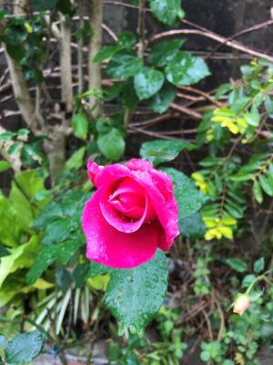

うるがいの話 ある日
最新: ヒロム【うるがいの話 ある日】とは 一日だけのプログです
『うるがいの話』の最新一日だけのプログで、通信料が少なく経済的だ。カニの画像をクリックすると全ての日付が載る『うるがいの話』サイトを表示します
|
|
【うるがいの話】 うるがい(ｳﾙｶﾞｲ urugai)とは、『もずくがに』の名前でとても大きくなります。 |
|---|---|
|
|
【カミマヤーの話】 猫のことを方言でマヤーといいます。カミマヤー（kamimayaa）とは、神の猫のことです。 |
|
【タナガーの話】 たながー（ﾀﾅｶﾞｰtanagaa）とは手長えびのことで、何種類かあり大きいのは車 エビぐらいになります。 |

|
【ぶながぁの話】 ぶながー(bunagaa)とは、赤い髪の毛、赤い身体、そして身長は１ｍ２０ｃｍ ぐらい、川の蟹を食べているの目撃された。場所は沖縄県国頭郡大宜味村のと ある村僕の隣近所に住んでいる爺さんから、聞いた話です。 |
|
|
【ギーマの話】 ギーマ(giima)とは、山原の里山に咲くスズランに似た、 花を付けます。実は食べられます、 気が付くと口の周りが紫になっています。 |
2022年02月04日 (金）ヒロム
16:05
ＱＡＢ琉球朝日に、ヒロムという名前のアナウンサーがいる。同じ名前の高校
性の同級生がいた。３年生の時、体育の授業でグランドを５キロ、２０分以内
のタイムだったら、５を上げると先生が宣言した。下は短パンでなくジャージ
のままで、サッカー部のヒロムの後について走る。２番目は楽である、そして
最後の１周、力を温存した私は、一気にシニバイ（死ぬほど走る）し、１９分
台でゴールする。ヒロムが２位、私に向かって『卑怯！』と笑っていた。アナ
ウンサーのヒロムですと聞くたびに彼を思いだすのである。通知表は５だった

昨日の夕方５時から、ＺＯＯＭで副業の事務局から、キックオフのミィーテイ
ングをする。２名の講師を含めた５名が事務局が顔ありで、さすがにこの時間
帯なのでメンバは１２名で行われた。気づいたのはこの５名を、画像から自宅
の部屋から参加している、顔の後ろの部屋が丸見えである。この事業は、２０
１５年離島から始まったようである。ん、もしかしたら彼らは離島にいてこの
ミィーテイングに参加しているかもと思った。そして、彼ら全員ヘッドホーン
付きマイクをしていない！、おお、今はそいうインフラなんだ。工工四の対応
にはまっている私は、ⅮＸ人材育成の課題のレポートを昼前に投稿する（動画
を見た感想：良く分かりませんです）。もちろん、ストレートに書くと心情が
悪くなるので婉曲的に、 先ほど講師から百点満点の８０点と採点結果がポッ
プアップされた。おお、あんなネガチブなレポなのに、ま、ご祝儀カネ。動画
編集研修は、ウフフ、まだ初めていない。
１５時５４分 ビットコインの総資産 ￥１２、６８６↑